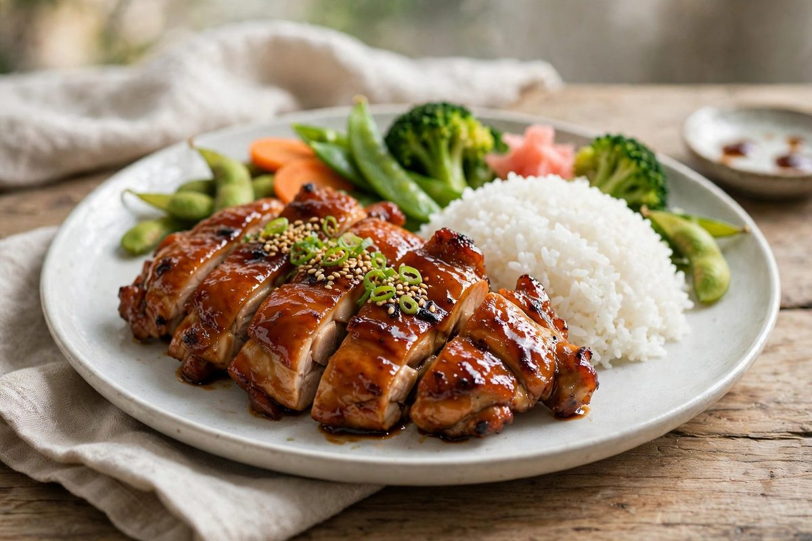

Teriyaki — The Sweet-Savoury Japanese Glaze
How to make teriyaki sauce from scratch and use it on chicken, salmon, and tofu without burning the glaze.
What teriyaki means
Teriyaki describes both a cooking method and a sauce. The word combines teri, the shine or glaze, with yaki, grilling or pan-frying. The sauce is a simple mix of soy sauce, mirin, sake, and sugar, cooked down until it coats the food with a glossy layer. It is sweet and savoury at once, and it works on chicken, salmon, tofu, and even aubergine. Because the sauce contains sugar, it burns easily, so the cooking method matters as much as the ingredients.
Making the sauce
A reliable ratio is four tablespoons of soy sauce, four tablespoons of mirin, two tablespoons of sake, and two tablespoons of sugar, which makes enough for about four servings. Combine the ingredients in a small pan, heat gently, and stir until the sugar dissolves. For a thicker glaze, simmer it for a few minutes until it coats the back of a spoon, but watch it closely because it thickens fast. You can make the sauce ahead and keep it in the fridge for a week, which makes weeknight teriyaki very quick. Use a light soy sauce if you can; a dark one makes the glaze too salty and too dark.
Teriyaki chicken
The classic version uses boneless chicken thighs, which stay juicy and take the glaze well. Season the thighs lightly, then cook them skin-side down in a lightly oiled pan over medium heat until the skin is crisp and golden, about six to eight minutes, then flip and cook the other side. Remove the chicken, pour off excess fat, and add the sauce to the pan. Return the chicken and turn it in the sauce as it thickens, spooning it over the top. Slice the chicken and pour the remaining glaze over it. Resting the chicken for two minutes before slicing keeps the juices in.
Teriyaki salmon and tofu
Salmon cooks faster than chicken and needs a gentler hand. Sear it skin-side down for about four minutes, flip it briefly, and then add the sauce at the end, turning the fillet once to coat it. Overcooking salmon makes it dry, so take it out when the centre is still slightly translucent. For tofu, press firm tofu to remove water, cut it into thick slices, and fry them until golden on both sides before adding the sauce. The tofu absorbs the glaze well. Both versions are ready in under twenty minutes, which is why teriyaki is such a useful weeknight dish.
What to serve with it
Teriyaki is almost always served with plain steamed rice, which balances the sweet-savoury sauce, and a simple vegetable such as steamed broccoli, green beans, or a small salad. Pickled ginger or a sprinkle of spring onion and sesame seeds adds freshness and texture. Keep the plate simple; the glaze is the star, and a crowded plate distracts from it. A small bowl of miso soup alongside makes a complete, balanced Japanese-style meal without much extra work.
Avoiding burnt glaze
The main mistake is adding the sauce too early. Sugar burns at high heat, so the sauce should only go in once the protein is nearly cooked and the heat is medium or medium-low. If the sauce darkens too fast, lower the heat and add a splash of water. If it gets too thick, loosen it with a little water or sake. Once you learn to add the sauce last and control the heat, teriyaki becomes one of the most reliable sauces in home cooking, and the same glaze works on grilled vegetables, meatballs, and even roasted aubergine.
Frequently Asked Questions
Can I make teriyaki sauce without sake?
Yes. Leave the sake out and add a tablespoon of water instead, or use a little extra mirin. The flavour will be slightly less complex, but the glaze still works well.
Why does my teriyaki sauce burn?
The sugar in the sauce burns at high heat. Add the sauce only near the end of cooking, keep the heat at medium or lower, and turn the food often once the sauce is in the pan.
How long does homemade teriyaki sauce keep?
Stored in a sealed container in the fridge, it keeps for about a week. Warm it gently before use, and add a splash of water if it has thickened.